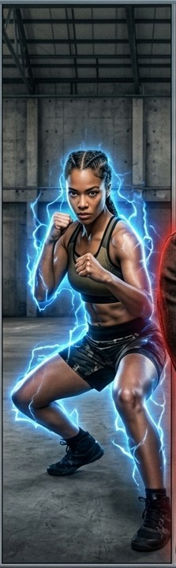
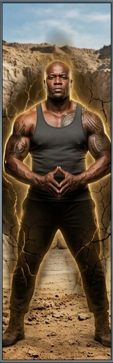

¿Quiénes somos?
Integrantes: 5 (o los que quedan en pie).
Nivel de código: Cuestionable.
"Si funciona, nadie sabe por qué; si se rompe, culpa a claudio.".
Uso de IA: Ocacionalmente.
Lulo

Johan

Más Abusadores y Abusados Que Nunca
Integrantes: 5 (o los que quedan en pie).
Nivel de código: Cuestionable.
"Si funciona, nadie sabe por qué; si se rompe, culpa a claudio.".
Uso de IA: Ocacionalmente.


Hice el readme y, sorprendentemente, no se rompió..
Mi nivel de [CSS / backend / diseño / frontend]: está entre ‘sé lo que hago’ y ‘con fé el push’.
Quieren un milagro? persona equivocada solo programo, (creo)
Volver a los integrantesSi este codigo funciona es un milagro.
Se de frontend y de fe y el frontend ya se me esta olvidando.
Todo lo que este aqui lo puede copiar a gusto es mas seguro hasta yo lo hice.
Volver a los integrantes